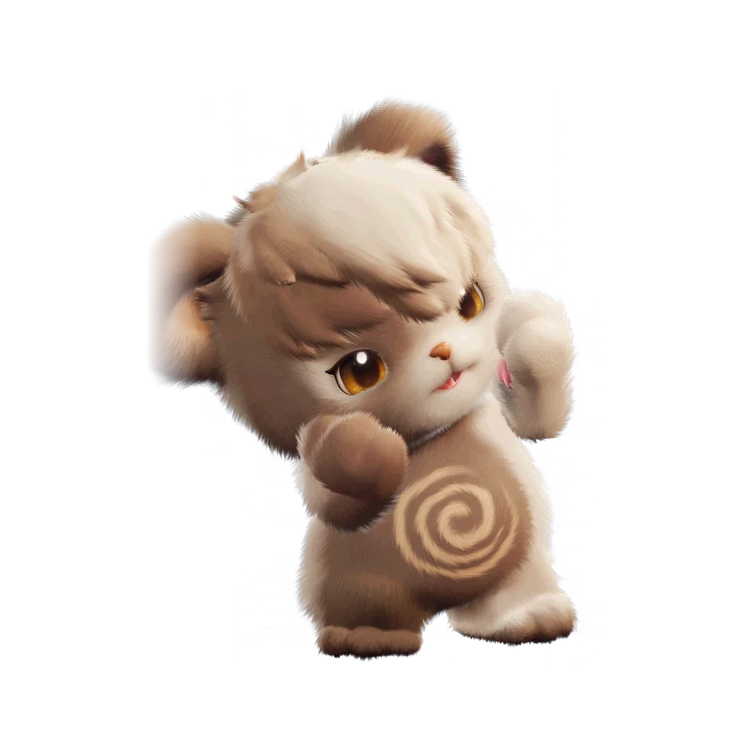

รายชื่อ Aniimo › #068

ลูกหมีขี้เซา (Cubbo)
#068ธาตุดินLuminDPSTier C
ใช้เวลาทั้งวันละเมอเดินหลับ ทันทีที่ถูกปลุกจะหงุดหงิดจนควบคุมตัวเองไม่ได้ พอหมดแรงก็หลับไปอย่างสงบเหมือนเด็กทารก
ดูรายละเอียดเต็ม ร่างพิเศษ และร่างเปล่งประกายค่าสถานะพื้นฐาน
| HP | 92 |
|---|---|
| ATK | 100 |
| P.DEF | 70 |
| M.DEF | 61 |
| REGEN | 70 |
| BREAK | 42 |
สกิล
| โจมตีปกติ | ATK ดิน ใช้พลังดินโจมตีเป้าหมายระยะประชิด |
| สกิล 1 | Fanatic Clawing ดิน ข่วนเป้าหมายสูงสุด 3 ครั้ง เมื่อครั้งที่สามโดน สกิลถัดไปได้ [Rage] สองเท่า ในสถานะ [Enraged] แต่ละครั้งที่โดนติด [Claw Mark] 2 สแต็ก สูงสุด 6 สแต็ก |
| สกิล 2 | Earthquake ดิน กระทืบพื้นส่งคลื่นกระแทกใส่เป้าหมายด้านหน้า ทำดาเมจและล้าง Claw Mark ทั้งหมดบนเป้าหมาย แต่ละสแต็กทำดาเมจเพิ่ม 10% ของพลัง และทำให้มึน 2 วินาที |
สายวิวัฒนาการ
- ลูกหมีขี้เซา → เจ้าหมีขี้เซา (Aniimo เลเวล 47, ชนะ Alpha Grizbo)
จุดเกิด
- Rosetower Woods Lv. 43–50
Held Item ที่แนะนำ
- Ferocious Fang Aniimo ที่สวมใส่ได้ ATK เพิ่ม 0.7 ต่อเลเวล
งานใน Homeland
งานธาตุดิน Lv.1, ขนของ Lv.1